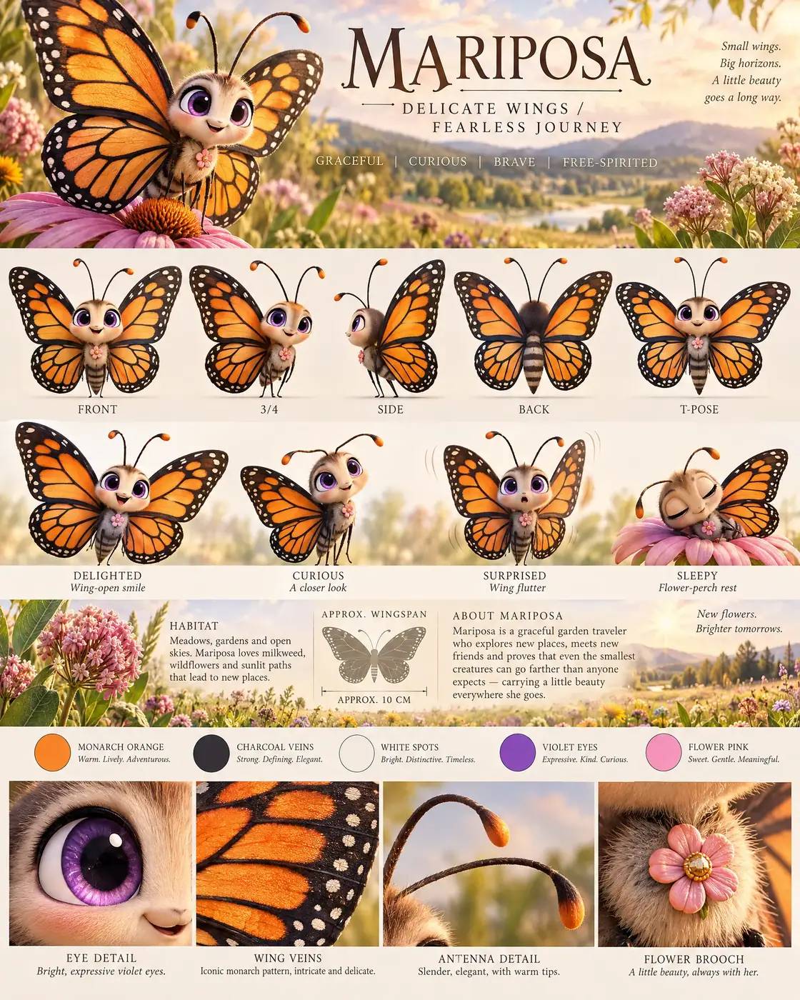

#89 of 100
Mariposa
Monarch butterfly
Tiny CrittersDELICATE WINGSFEARLESS JOURNEY
- Species
- Monarch butterfly
- Collection
- Tiny Critters
- Height
- 10 CM
- Personality
- GRACEFULCURIOUSBRAVEFREE-SPIRITED
- Colour palette
- MONARCH ORANGECHARCOAL VEINSWHITE SPOTSVIOLET EYESFLOWER PINK
- Expressions
- delighted wing-open smile
- curious antenna tilt
- surprised wing flutter
- sleepy flower-perch expression
- Detail panels
- EYE DETAIL
- WING VEINS
- ANTENNA DETAIL
- FLOWER BROOCH
- Character note
- Mariposa traveling farther than anyone expects while carrying a little beauty everywhere
Reference sheet prompt
Cute monarch butterfly named MARIPOSA, with oversized violet eyes, orange wings patterned with black veins and white dots, a small fuzzy body, delicate antennae, and a tiny flower-shaped brooch. A graceful garden traveler high-end 3D animated feature reference sheet, portrait 4:5 board, original character, header “MARIPOSA” with tagline “DELICATE WINGS / FEARLESS JOURNEY,” traits “GRACEFUL / CURIOUS / BRAVE / FREE-SPIRITED” full-body turnaround — front / 3-4 / side / back / T-pose, exact wing pattern, antennae, body, brooch, and proportions consistent, wings fully visible in every view, labels beneath each pose row of 4 expressions: delighted wing-open smile, curious antenna tilt, surprised wing flutter, sleepy flower-perch expression palette swatches MONARCH ORANGE, CHARCOAL VEINS, WHITE SPOTS, VIOLET EYES, FLOWER PINK sunny wildflower meadow habitat accents with milkweed, blossoms, tall grasses, and soft golden light in the information band, approximate wingspan “APPROX. 10 CM,” bio about Mariposa traveling farther than anyone expects while carrying a little beauty everywhere bottom macro panels labeled EYE DETAIL, WING VEINS, ANTENNA DETAIL, FLOWER BROOCH 8k render, crisp delicate wing patterns, no extra butterflies, no logos